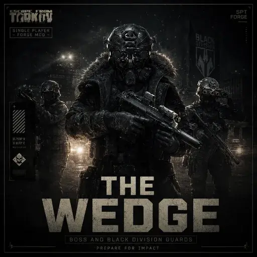

Wedge
- Downloads
- 10,098
- Favourites
- 58
- Mod lists
- 65
Overview
THIS IS 100% COMPATIBLE WITH THE BLACKOUT MOD FROM VULTIFY AS WELL
Adds The Wedge, the Black Division boss from EFT 1.0.5, and his guard squad to most maps. He gets his own spawn type and his own brain rather than being a reskinned existing boss.
He does not add the Icebreaker map. He’s the boss from it; the map itself is a whole other job.
The fight
He pushes toward the nearest player instead of camping, opens with flash and smoke on the approach, and then hands the gunfight to SAIN so he still shoots like something you know how to read. His Black Division Operator escort spawns in the same zone and rushes with him, so the squad arrives together rather than trickling in one at a time. His smoke grenades from Icebreaker are not backported yet so I’ve put regular smokes on him for now.
880 health, roughly double a PMC, and his gear spawns at near-perfect durability.
His kit
NOW INCLUDES HIS ACTUAL CLOTHING AND GEAR
Authentic to 1.0.5 EFT. Spiritus LV-119 plate carrier, Team Wendy EXFIL with L3Harris PVS-31A night vision on a Wilcox mount, and an Avon M53A1 gas mask. Weapons are the SCAR-H, SA58, MDR or MP7, with a USP .45 sidearm and a SOG tomahawk.
Spawn chance
Scales with level — 10% at 15, another 5% every 5 levels, capped at 25%. So level 20 is 15%, level 30 and up is 25%.
Solo that’s your level. In Fika it averages everyone who’s pinged the server in the last 15 minutes, so one high-level player doesn’t drag the lobby’s odds up on their own.
Requirements
Requirements
Install all four of these first. None of them are optional — Wedge will not run without them.
| Mod | GUID | Why | If it’s missing |
|---|---|---|---|
| MoreBotsAPI | com.morebotsapi.tacticaltoaster |
Supplies the custom boss role Wedge spawns as. There’s no role without it. | Wedge’s server mod references it directly and won’t load. |
| WTT-ContentBackport | com.wtt.contentbackport |
Every piece of his Black Division gear and clothing comes from it. | His kit doesn’t exist and he can’t be generated. |
| DrakiaXYZ-BigBrain | xyz.drakia.bigbrain |
The rush layer registers against it. | BepInEx skips the plugin entirely — he’d spawn with no brain. |
| Black Division | com.blackdiv.tacticaltoaster |
The faction he leads; his guards are its soldiers and share its content. | His server mod won’t load. |
Both MoreBotsAPI and WTT-ContentBackport ship in several parts (plugin, patcher, server mod) — install them whole, don’t cherry-pick files. Two things worth knowing:
- MoreBotsAPI needs DrakiaXYZ-BigBrain itself, so it’s required twice over.
- WTT-ContentBackport’s server half needs WTT-ServerCommonLib (
com.wtt.commonlib), and installing it normally brings WTT-ClientCommonLib along too. Both are part of the WTT set rather than extra downloads. Wedge uses WTT-ServerCommonLib directly as well, to register the names the end-of-raid screen shows for him and his guards.
Optional:
| Mod | GUID | What you lose without it |
|---|---|---|
| SAIN | — | The gunfight. He still spawns, rushes and throws grenades, he just fights on the vanilla brain. Found by reflection, so no assembly reference — if the interop fails he logs a warning and carries on. |
| Fika | com.fika.core |
Co-op, and the group-average spawn scaling with it. |
Fika
The server mod goes with the SPT server. The client plugin and prepatcher go on whichever machine owns the raid, headless included.
Server — user/mods/Wedge/config.jsonc
Restart the server after editing.
| Key | Default | What it does |
|---|---|---|
levelScaling |
true | Off falls back to flatChance |
baseLevel / baseChance |
15 / 10 | Where the curve starts |
chancePerStep / stepLevels |
5 / 5 | +5% every 5 levels |
chanceCap |
25 | Ceiling |
flatChance |
15 | Only used with scaling off |
groupScaling |
true | Co-op: average the session instead of the host alone |
groupWindowMinutes |
15 | How recent a ping counts toward that average |
escortAmount |
3 | Guards |
singleZone |
true | Keeps him and the escort arriving together |
debugLogs |
false | Verbose server logging |
enabledMaps lists where he can turn up: Reserve, Streets, Customs, both Factories, Interchange, Labs, Lighthouse, both Ground Zero tiers, Shoreline, Woods and Labyrinth. Delete an entry to switch that map off.
Client — F12, section Wedge
- Enable — master switch for his client-side behaviour
- Aggressive Rush — he and his guards push the nearest player when not already in a SAIN firefight
- Grenade Barrage — flash and smoke on approach
- Rush Radius (m) — caps how far he’ll chase, so he doesn’t sprint the map from spawn
- Layer Priority — advanced. Leave it alone unless you know what you’re doing; it has to stay below SAIN’s combat layers at 20+, or he’ll rush when he should be shooting.
Version
2.2.1
Wedge 2.2.1
Housekeeping release. No gameplay changes.
⚠ WTT-ContentBackport must now be 1.1.1 or newer.
What changed
- Dropped the M8230’s two asset bundles (
assets/content/weapons/m8230/client_assets.bundleand.../m8230/textures/client_assets.bundle). ContentBackport 1.1.1 ships both itself — its own M8230 container had always declared them as dependencies without providing them, which is why Wedge carried copies. Once both mods shipped the same bundle, whichever loaded second printed a redUnable to add bundle:line at server start. Harmless (the first copy wins and the grenade works either way), but it reads like a broken install. Download drops from 25 MB to 14 MB. - Dependency floor raised to WTT-ContentBackport >= 1.1.1 (was 1.1.0). On an older ContentBackport those bundles resolve to nothing, so the server refuses to load Wedge rather than run a boss whose grenade is invisible. Update ContentBackport first; Wedge itself extracts over your install as usual.
If you saw those two lines on 2.2.0 with a current ContentBackport, this is the tidy-up.
Files
Wedge-2.2.1.zip
SHA-256: BDADAE465EBE7F31A980F270A20976F446744D10F21D9A48B84AFB961FDE22B0
VirusTotal
All three DLLs clean, 0/74:
Wedge.Client.dllhttps://www.virustotal.com/gui/file/bbe5b2dd7de727ead332948efc77624239defcb3f6829df857f04db0085519a8Wedge.Server.dllhttps://www.virustotal.com/gui/file/a02d1c9320b0814871631dbc489d440163ae9b86b307e874a3838311ed585b93Wedge.Prepatch.dll(byte-identical to the 2.1.0/2.2.0 build) https://www.virustotal.com/gui/file/eb74c8d54898f35fe68f4369657992b51a35ba69d6adf7d0c65dd9e64ee61df0
Dependencies
Version
2.2.0
He keeps his distance, wears ContentBackport’s own gear, and the download drops to less than half.
⚠ WTT-ContentBackport must be 1.1.0 or newer (installing it normally brings WTT-ServerCommonLib 2.0.22+, which is also required). His cover, clothing, voice and MP7 parts now come from ContentBackport’s copies, and on anything older the server refuses to load Wedge rather than run half a boss. Update it first; Wedge itself extracts over your install as usual.
- He spawns away from you. His squad only takes a spawn zone at least 200 m from where everyone is standing at raid start — no more opening a raid with the whole squad next door. It’s an F12 slider (0–500 m); a map with nothing that far simply uses the farthest zone it has.
- He stands down for Black Division. A raid that has already drawn a Black Division patrol is theirs — Wedge sits it out rather than fielding the faction twice. F12 toggle if you’d rather meet both at once; they’re allies either way and never fight each other.
- ContentBackport’s gear, properly. The covered helmet is the real arrangement now — a stock Team Wendy EXFIL wearing ContentBackport’s MultiCam Black cover — and his MP7 carries their SF3P flash hider and the full FAB Defense ARS stock, buttstock included, which the old kit was missing. Old Wedge items in your stash stay valid.
- The gas wash is white, matching 1.0.5, and the M8230’s cook and throw paths got another layer of armour against the vanishing-grenade report.
- F12 grew three sections — Spawns (the whole chance curve, party averaging, spawn delay, the distance floor, the stand-down toggle), Balance (guards by party size, his and his escort’s health) and Maps (a checkbox per map). On a co-op server the host’s settings are the ones that count. The Lab is in the list, off by default — and stays off while Blackout is installed, since its own Wedge already garrisons the place.
- Weapons rebuilt. Every gun generates as a proper preset build instead of a parts lottery, and his guards carry Black Division’s own roster.
- He and his guards can no longer turn on each other — the friendly-fire report is fixed at the root, and the squad survives split spawns.
- Seven bundles ContentBackport now ships were dropped from the download: 63 MB → 25 MB.
Dependencies
Version
2.1.0
- He and Black Division are one side now. His squad and any other Black Division patrol treat each other as allies instead of trading fire on sight.
- He’s hostile to everyone else — scavs, the scav bosses and their guards, PMCs, raiders, rogues, cultists, the Partisan, and the infected. If you run RUAF or UNTAR, he fights those too. The BTR he leaves alone.
- He’s no longer a scav boss for Fence. Killing him or his guards as a player scav costs you no Fence standing — he’s an invading faction like Raiders or Rogues, not a scav boss.
- Loot cleanup. His guards carry the normal four-pocket rig instead of his own boss pockets, the keycard holder case only turns up on Wedge (one at most, not four), euros are capped at 5k, and stims at one to three.
No new requirements. RUAF and UNTAR are optional — nothing changes if you don’t run them.
Dependencies
Version
2.0.2
The profile-error fix. If your server greeted you with a red wall about your profile being invalid over an item it didn’t recognise — the covered EXFIL, the goggles, a Model 8230 — this is that bug. Nothing about how he plays has changed.
What it was. The mod registered his items after SPT’s boot-time profile check, so any Wedge gear you kept — worn, stashed, or in the mail — read as an orphaned modded item once per server start. The gear was always fine in play; the boot check just ran before the mod had said the items exist.
Updating is the whole fix. The invalid flag never reaches your profile file, so if you only ever saw the error, your gear is still there — update and the red wall is gone.
If you enabled removeModItemsFromProfile (the workaround SPT’s own error text suggests): those items were deleted from the profile, and attachments go with their parent — that’s how a helmet takes the goggles with it. They’re not coming back; set it back to false, update, and take a new set off the man himself.
Coming from 0.1.x, read the 2.0.0 notes too: that version added Black Division as a new required mod.
Dependencies
Version
2.0.1
A fix to how the mod identifies itself. Nothing about how he plays has changed. Should now be identified as verified
Dependencies
Version
2.0.0
Leads with the fixes, since those matter most if you already run him:
- The raid-end crash is fixed. If you were hitting
[Wedge] raid-end reinject failed: session id provided was emptyat the end of a raid — and stuck because taking him off breaks your profile — update rather than remove and it’s gone. - His Model 8230 grid icon no longer shows as the smoke grenade it was cloned from.
- Kit fixes — his meds, ammo and pockets all generate correctly now, and guard counts scale with the size of your party.
Assets now included:
- His actual 1.0.5 art. The Black Division stand-in is gone. He wears his own head, fur-lined coat and trousers and speaks with his own voice, and his covered Team Wendy EXFIL, PVS-31A, Avon M53A1 gas mask and Model 8230 gas grenade are his own models.
- The gas is real. The 8230 leaves a cloud that drains anyone caught in it without a filter, stings the eyes and sets you coughing. A full-face mask shuts it out; a respirator keeps it out of your lungs but not your eyes. Editable in F12.
- A squad, not a scatter. He calls orders his guards act on — cover, hold, push — and the escort spawns in his zone and rushes in with him.
- His face and voice are playable for your own PMC in character creation.
New requirement: he now needs Black Division (com.blackdiv.tacticaltoaster) installed alongside the others — see the requirements below.
Known issues / where it differs from 1.0.5
0.16.9 has no CS-gas mechanic of its own, so a few things are the closest the engine allows rather than a 1:1 recreation:
- The gas cloud and its sting aren’t the authentic 1.0.5 gas. The cloud is built on the game’s own smoke-grenade system and the effect — damage, blurred and tunnelled vision, coughing — is layered on top. It reads and plays as gas, but the exact look and feel differ from the real thing.
- No gas tripwires. In 1.0.5 he can lay gas-grenade tripwires; the engine won’t let a bot place that kind of hazard here, so he throws the gas instead.
- The SOG tomahawk is in his kit, not a melee move. Bot melee isn’t cleanly exposed in this build, so expect gunfights rather than a tomahawk rush.
- He turns up on the existing maps, not the Icebreaker map — that’s a separate job.
Dependencies
Version
1.0.1
fixed broken install + name on death screen
Dependencies
Version
1.0.0
check description.